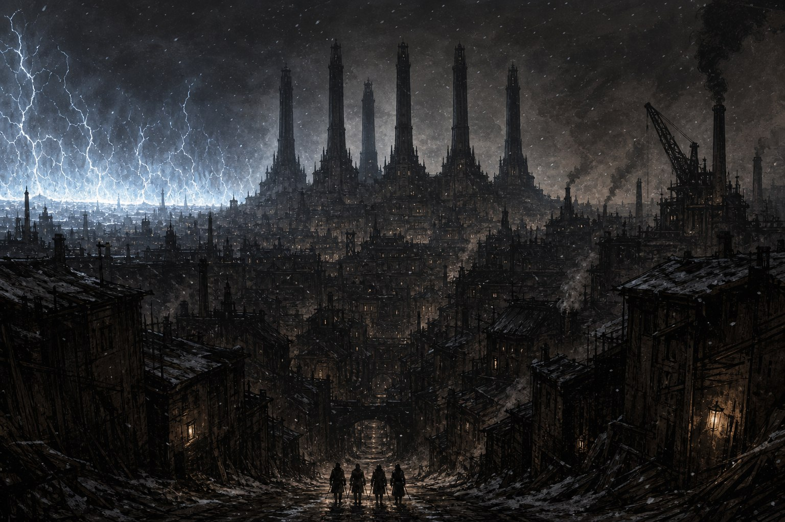
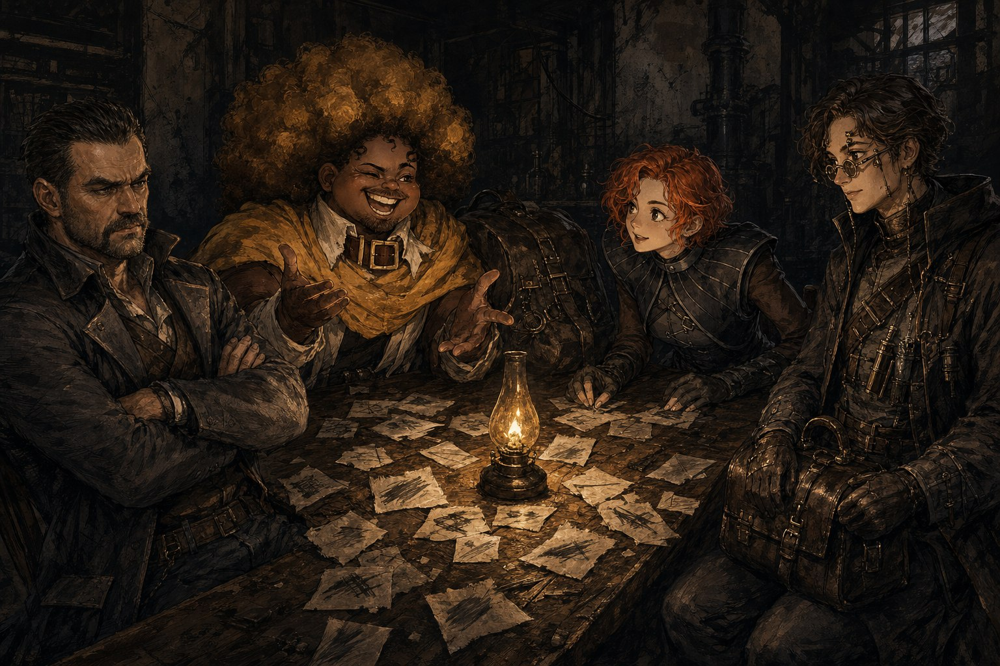
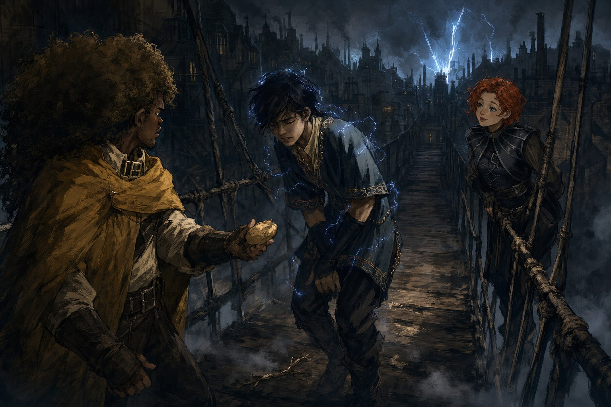
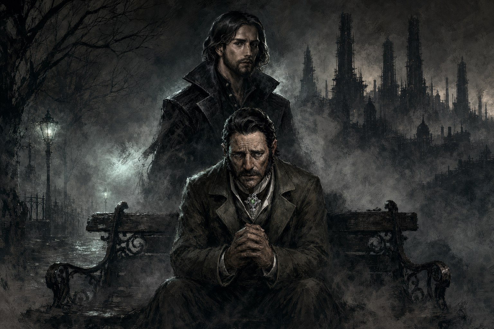
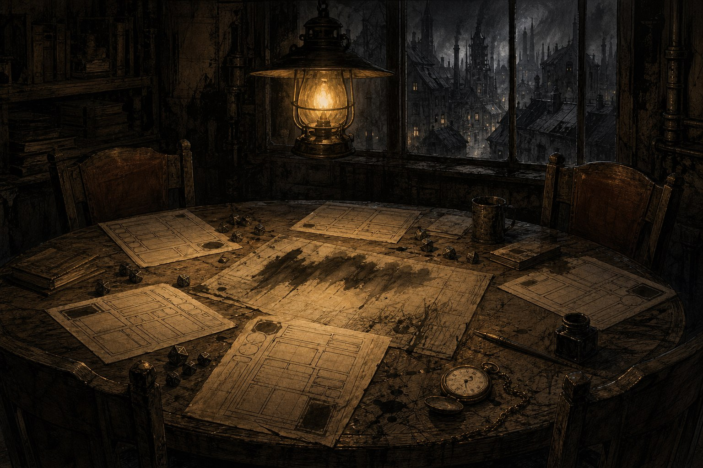

프롤로그

식스타워즈의 권력은 비어 있었다. 붉은고리회는 자취를 감췄고 스컬록 공의 위세는 무너졌으며, 살아남은 조직들은 숨을 죽인 채 물러앉았다. 그런 빈자리는 오래 비어 있는 법이 없다. 어느 겨울, 사슬을 끊었다는 이름의 신생 건달패 하나가 그 자리를 넘보며 첫발을 뗐다.
이것은 시작만 남은 이야기다. 어떤 이야기는 끝을 보지 못한 채 멈추고, 그 멈춘 자리조차 세계의 일부로 남는다. 언체인드가 도스크볼의 밤에 남긴 두 걸음을 여기에 적는다.
0화 “캐릭터 메이킹”

식스타워즈의 권력은 순식간에 텅 비어 있었다. 한때 이 구역을 손아귀에 쥐었던 붉은고리회는 자취를 감췄고, 스컬록 공의 위세도 무너져 내렸으며, 은못용병단과 회색망토단은 겨우 숨만 붙어 있는 처지로 물러앉았다. 누구든 손을 뻗으면 잡히는 자리였다. 그리고 그 빈자리를 향해, 각자 다른 이유로 도스크볼을 떠돌던 넷이 걸어오고 있었다.
한때 푸른코트였던 사내는 지금 탐정 간판을 걸고 있었다. 녹스 콜번, 사람들은 그를 데이지라 불렀다. 7년 전, 극악무도한 범행에 분노한 그가 용의자 하나를 꽃병으로 내리쳐 죽음에 이르게 한 적이 있었다. 그 용의자, 템플턴은 진범이 아니었다. 죄책감을 이기지 못한 콜번은 시체를 감령관에게서 빼돌려 유령으로라도 살아갈 길을 터주었지만, 그 짧은 생각이 억울하게 죽은 자를 자신에게 들러붙는 악령으로 만들 것이라는 데는 미처 생각이 미치지 못했다. 그 뒤로 그는 데이지라는 이름을 얻었고, 그 귀여운 어감을 누구보다 싫어하는 사람이 되었다. 정교한 추리보다는 감과 급한 성질로 사건을 끝맺는 그였고, 탈법을 마다하지 않는 그 방식이 도스크볼 뒷세계의 인연들과 그를 이어주었다. 까마귀파가 건재하던 시절부터 알고 지낸 그레이스, 지금은 단검이라 불리는 그 여자아이도 그런 인연 중 하나였다. 아내 오드리엔은 취기를 지우지 못한 채 집에 돌아오는 남편을 보며, 그가 점점 더 위험한 길로 걸어가고 있다는 불안을 떨치지 못했다.
두 살 때부터 도스크볼 뒷골목에 갇혀 자란 여자가 있었다. 데미안 그란델, 사람들은 그를 물안개라 불렀다. 그를 키운 것은 무면허 유령사 노파 메리였다. 유령을 다루는 법과 마도학과 연금술의 부스러기들을 어깨너머로 배웠지만, 그 대가로 바깥세상과의 모든 문을 자물쇠로 걸어 잠근 채 살아야 했다. 어느 날 메리가 홀연히 사라지고, 그를 구해낸 것은 메리의 오랜 지인이었던 괴짜 발명가 캐시디였다. 사람보다 유령과 이야기를 나눈 세월이 길었던 물안개에게는 세상의 상식이 낯설었다. 목욕탕에서 만난 기예르모의 누드화 모델 제의를 별생각 없이 받아들였다가, 그 끈질긴 구애와 감금을 겪고서야 자유의 무게를 알았다. 다시는 그 손아귀로 돌아가고 싶지 않았던 그는, 자신을 지켜줄 무리를 필요로 했다. 물론 재미있어 보인다는 이유가 더 컸지만.
열여섯 살, 짜리몽땅한 키에 근육질 몸을 가진 이가 있었다. 얼굴에 수염을 기르고 스스로를 브라더.Bee라 소개하는 그는, 만나는 사람마다 털보수염단 이야기를 늘어놓았다. 스코블란 난민 출신 일곱 명이 모여 만든 그 자경단은, 도스크볼에서 맡은 한 건수에서 사고를 냈고, 그 사고로 마침 근처를 지나던 학자 부부가 목숨을 잃었다. 아이를 지키려 몸을 던진 부부의 곁에는 영문도 모르고 울어대는 아기만 남았다. 죄책감에 짓눌린 털보수염단은 그 아기를 거두어 가족으로 키웠고, 이름 대신 아기가 자주 내던 소리를 따 아부라 불렀다. 열세 살에 정식으로 조직의 일원이 된 첫날, 아부는 모두가 죽어 있는 현장에 도착했다. 숨이 붙어 있던 대장은 마지막으로 한마디를 남겼다. “네가 할 수 있는 일로.. 도울 수 있는 사람들을 돕고, 살아.” 그날 이후 아부는 고아들을 돌보며 그 유언을 지켰고, 동시에 그 건수를 넘긴 자 머시를 찾아 복수할 날만을 기다렸다. 힘만으로 풀리지 않는 일이 있다는 걸 깨달은 그는, 털보수염단 시절부터 신세를 졌던 의사 재봉틀을 다시 찾아갔다.
이루비아의 학자 집안에서 태어난 사이린 그린들호퍼는 사춘기 무렵 다른 사람이 되었다. 의과대학 도제 생활을 하던 스무 살, 어차피 아는 것만 반복해서 가르친다는 불만을 이기지 못하고 가족과 학업과 자격증을 모두 내던진 채 도스크볼로 흘러들었다. 위조한 면허장과 타고난 손기술로 브라이트스톤에 병원을 냈지만, 스물다섯 되던 해 쌍둥이 마누엘라의 폭로로 그 병원마저 잃고 나이트마켓의 야매의사로 전락했다. 아부가 하소연을 늘어놓으러 온 것은 그 무렵이었다. 재봉틀이라는 별명으로 불리며 의약학과 공학의 잡다한 지식으로 임기응변을 부리던 사이린은, 아부가 가져온 제안을 마다할 이유가 없었다. 실력 좋은 의사가 필요하지 않은 조직은 없었으므로.
넷은 그렇게 식스타워즈의 빈자리 앞에 모였다. 자객단이라는 이름이 먼저 오갔지만, 얼굴을 맞대고 보니 어울리는 것은 건달패 쪽이었다. 조직의 이름을 정하는 데는 무려 세 시간이 걸렸다. 꽃과 바늘과 방직과 황금, 저마다의 사연에서 나온 숱한 이름들이 오갔고, 그중에는 두 번 다시 입에 담고 싶지 않은 것도 있었다. 결국 자리를 잡은 이름은 그 어떤 사연과도 무관한 언체인드였다. 상납할 곳으로는 붉은고리회를 골랐다. 무엇 하나 증명된 것 없는 넷이 텅 빈 권력의 자리를 겨냥해 첫발을 뗀 순간이었다.
1화 “벼락이라니 안 좋은 예감이 들어요”

그날 밤, 도스크볼의 하늘이 이유 없이 번쩍였다. 흔들다리 위에 서 있던 넷은 멀리 솟은 건물들 사이로 번개처럼 터지는 빛과, 지붕에서 지붕으로 넘나드는 그림자들을 보았다. 무엇을 위한 싸움인지, 누가 이기고 지는지 알 길이 없었다. 그저 밤하늘 한 조각이 통째로 뒤집히는 듯한 광경이었다. 이방인 행세로 도시를 떠돌던 물안개는 그 낯선 소란에 눈을 빛내며 즐거워했고, 나머지는 무심히 그 밤을 흘려보냈다. 언체인드, 아직 간판도 낡은 이 조직에게는 그저 지나가는 밤일 뿐이었다.
일은 스파크공학회에서 들어왔다. 학회장 우나 파로스는 미스트쇼어 공원에서 언체인드를 맞았다. 동료 교수 디서플린의 죽음을 캐 달라는 의뢰였다. 우나의 곁에는 비서 베론이 그림자처럼 붙어 있었는데, 물안개가 인사랍시고 다짜고짜 그를 끌어안는 통에 자리는 시작부터 어색해졌다. 우나는 시종일관 몸을 떨었다. 사고사로 보기엔 석연찮은 구석이 있었고, 우나 자신이 그 죽음에 손을 댔다고 보기도 어려웠지만, 무언가를 두려워하고 있는 것만은 분명했다. 물안개는 그런 우나의 말을 들으며 내내 의심을 거두지 않는 얼굴을 하고 있었다.
사건 현장으로 가는 길에 다시 마주친 것은 그 흔들다리, 그리고 그 위에 서 있던 소년 레이븐이었다. 발치의 얇은 나뭇가지 하나 들어올리지 못하면서 “음.. 좀 무겁군” 하고 중얼거리던 허약한 소년은, 도스크볼을 지키기 위해 여기 있다는 말을 몇 번이고 반복했다. 브라더.Bee는 처음엔 그 아이를 챙기려 했다. 먹을 것을 건네고 곁을 지켰다. 하지만 알아들을 수 없는 말들이 끝없이 이어지자 참을성은 바닥났고, 결국 레이븐의 뺨을 치고 그를 바닥에 내동댕이치는 지경에 이르렀다. 그런데 그 직후, 지붕 위로 훌쩍 뛰어올라 아무렇지 않게 뛰어내린 것도, 번개를 두르고 나타난 것도 같은 소년이었다. 허약함과 초인적인 힘, 둘 중 어느 쪽이 진짜인지는 아무도 확신할 수 없었다.
싸움은 그 다리 근처에서 터졌다. 안개사냥개파가 푸른코트에게 덤벼드는 광경이었다. 개싸움이라기엔 지나치게 대담했고, 누군가 뒤에서 부추기지 않고서는 나올 수 없는 무모함이었다. 재봉틀은 어디선가 떨어지는 나뭇가지를 슥 피하고 석궁 화살까지 아슬아슬하게 흘려보내면서도 태연했다. 데이지는 상대 하나, 아이스픽을 가까운 거리에서 기습해 단번에 쓰러뜨리며 “짜잔!” 하고 외쳤다. 자본을 아끼지 않는 손으로 술값과 밥값을 대던 것과는 다른, 조직의 칼잡이다운 모습이었다.
싸움이 가라앉고 현장을 다녀오는 길, 다리 위에는 쓰러진 푸른코트들이 널브러져 있었다. 물안개는 아무 근거도 없이 레이븐이 죽였다고 소리쳤고, 브라더.Bee는 그 말에 별다른 의심 없이 동조했다. 진상이 무엇이었든, 두 사람의 확신은 흔들리지 않았다. 그 소란 한편에서 낯익은 얼굴, 형사 로드리게즈가 다시 나타났다. 지난 시절과 다름없이 어딘가 허술한 태도였지만, 푸른코트와 안개사냥개파 사이에 얽힌 사정이 그저 우연으로 보이지는 않았다.
그날의 끝에 나타난 것은 카고컬트였다. 무단으로 자리를 차지하고 있던 그가 데려온 손님은, 독특한 정장을 걸치고 검은 가죽장갑을 만지작거리는 사내였다. 플래시뱅. 그 이름이 던져지자 자리의 공기는 순식간에 달라졌다. 아직 이름도 낯선 이 조직 앞에, 벌집의 그림자가 벌써 드리우고 있었다.
에필로그

이야기는 여기서 멈춘다. 디서플린 교수의 죽음은 끝내 진상이 밝혀지지 않았고, 우나 파로스가 무엇을 두려워했는지, 흔들다리의 소년 레이븐이 정말로 무엇이었는지도 어둠 속에 남았다. 벌집의 플래시뱅이 언체인드에게 무엇을 원했는지는 아무도 듣지 못했다. 식스타워즈의 빈자리는 다시 주인을 찾지 못했고, 도스크볼이 새로운 무뢰한들의 이야기를 다시 시작하기까지는 그로부터 2년 가까이 걸린다.
종료 경위 메모

- 시즌4는 세션 34(0화)·35(1화) 이후 진행되지 않았다. 위키 시즌 페이지에는 “시즌4 조기종료”라고만 기록되어 있고, 명시적인 종료 사유는 위키 어디에도 남아 있지 않다.
- GM 후기(
401-후기)는 1화 말미에 2화 “Recoil of Lycoris”를 예고했으나, 2화는 만들어지지 않았다. - NPC 레이븐 문서에는 최종화·엔딩 연출(노래의 다른 버전, 한국어 버전 사용 등) 기획 메모가 남아 있어, 시즌 전체 구상이 이미 존재했음을 보여준다.
- 미해결로 남은 떡밥: 디서플린 교수 사망의 진상, 우나 파로스의 공포의 정체, 레이븐(스파크공학회 인체실험 생존자, 일렉트로플라즘 제어)의 정체와 행방, 안개사냥개파-푸른코트 충돌의 배후, 벌집(플래시뱅)의 접근 의도.
- 참고 표기: 사망 교수의 이름은 후기 간에 “디서플린”/”해서웨이”로 갈리나 다수 표기인 “디서플린”을 채택했다. 시즌4의 “붉은고리회”는 시즌3의 “불꽃고리회”와 원문 표기가 다른 별개 조직으로 취급했다(동일 조직이라는 근거 없음).